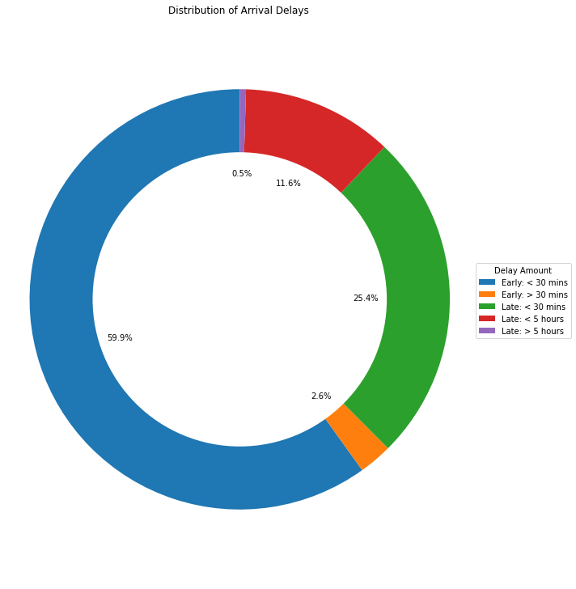
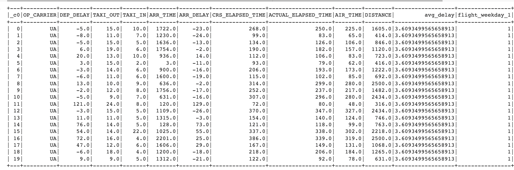
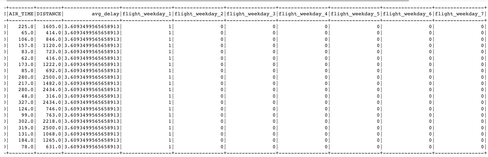

Predicts the delay in Arrival time of flights.
Our project aims at predicting the arrival delay of flight using only information available before the flight takes off. The target variable (ArrDelay - arrival delay) is a numerical value we will use regression algorithms only. We will be analyzing a big data set and for such amount of data we need big data tools such as Spark. Spark can store big datasets in cluster memory with paging from disk as required and effectively runs machine learning algorithms without having to sync multiple times to the disk, making them run faster.
1. The first step involved is to perform an exploratory Data Analysis by creating a correlation matrix to understand the dataset.
2. Second step is to process the data such that categorical values can be used for Linear regression. This step involves converting variables to
numerical values. We will be using OneHotEncoder library for implementing the same.
3. Third step is to split the data into training and test data sets followed by training the data using Linear regression and obtaining a model.
4. Fourth step is to perform Optimization on data by splitting the train data set into training and validating data.
5. Final step is to do hyperparameter tuning to increase the accuracy of our model.
Air travel is the most preferred way to travel. By 2030, more than 45000 connections will be observed per day on an average metro airport.
This makes it important to study the feasibility of taking a flight. For example:- If a flight from Charlotte to Atlanta takes an average time of
1 hour 18 minutes. But the flight is generally delayed by 20 minutes on average. This could make it impractical for someone as we have to reach the
airport 1 hour in advance, and also travel time to the airport adds up. Whereas, the same distance can be covered by car in equivalent time.
Hence, Understanding the delay of any particular airline at any given airport is important. This can also be used as a feedback mechanism for
airlines to make sure that the flight is not delayed. Our model will focus on predicting the delay in flights.
The data used for this project is taken from the data published by the US Department of Transportation. We have used data
from 2018. Size of dataset used - 893 MB. It consists of 7213446 rows and 28 columns. To study the data and relationship between the
columns we did a correlation analysis on the dataset to fetch the important set of features. After analysing the data we dropped these columns -
'FL_DATE', 'OP_CARRIER_FL_NUM', 'ORIGIN', 'DEST','CRS_DEP_TIME', 'DEP_TIME', 'WHEELS_OFF', 'WHEELS_ON', 'CRS_ARR_TIME','CANCELLED'
And we fetched the following set of columns to perform Linear Regression -
'DEP_DELAY', 'TAXI_OUT', 'CRS_ELAPSED_TIME', 'DISTANCE', 'flight_weekday_1', 'flight_weekday_2', 'flight_weekday_3', 'flight_weekday_4', 'flight_weekday_5', 'flight_weekday_6','flight_weekday_7'
We plotted the following graph to understand the distribution of delay time on the flight data for 2018 -

We have implemented the algorithm using the Pyspark framework. Execution of code was done on the DSBA Hadoop cluster.
Along with Pyspark we have used numpy and pandas libraries to perform operations on the data. For Data Processing we have used OnehotEncoder library.
1.) Data Analysis
Firstly, to analyse the problem and dataset we did an exploratory data analysis. Since most variables are numerical we created a correlation
matrix, of the numerical variables, to understand if we can find any correlation between the attributes. The closer the value is to 1 or -1,
the more positively or negatively the variables are correlated. A correlation of zero means that the two attributes are not correlated at all.
Looking at the correlation matrix we concluded that the DepDelay (departure delay) is highly correlated to arrival delay, so the departure
delay might be the most indicative attribute of a flight delay. Also, although weak, there exists a correlation between the TaxiOut and arrival
delay. Therefore we will consider these two as well.
2.) Cleaning the data
We used the .drop() function to drop all the columns that were concerned with the details after the flight took off and also columns that
were too correlated between themselves and could be redundant to the model causing the model to overfit. We also dropped cancelled flights and
variables that were not correlated to the arrival delay.
3.) Data Processing
To use the categorical variables in the regression algorithm, further processing was needed. The variables were converted to numerical values by
applying OneHotEncoder. Data after performing OneHot encoding -


3.) Training the model
We found that variables - departure delay and arrival delay displayed a high correlation and so were used for performing Linear Regression. We split
the data into train and test sets in the ratio 80:20. We performed the linear regression following these steps - converting the categorical values (if
it applies) to numerical ones, then assembling all in a features vector and running the machine learning algorithm to obtain a model.
We calculated the following metrics to evaluate the models performance -
a.) RMSE (Root Mean Squared Error) : 10.462845
b.) R squared : 0.950381
Air travel is the most preferred way to travel. By 2030, more than 45000 connections will be observed per day on an average metro airport.
This makes it important to study the feasibility of taking a flight. For example:- If a flight from Charlotte to Atlanta takes an average time of
1 hour 18 minutes. But the flight is generally delayed by 20 minutes on average. This could make it impractical for someone as we have to reach the
airport 1 hour in advance, and also travel time to the airport adds up. Whereas, the same distance can be covered by car in equivalent time.
Hence, Understanding the delay of any particular airline at any given airport is important. This can also be used as a feedback mechanism for
airlines to make sure that the flight is not delayed. Our model will focus on predicting the delay in flights.